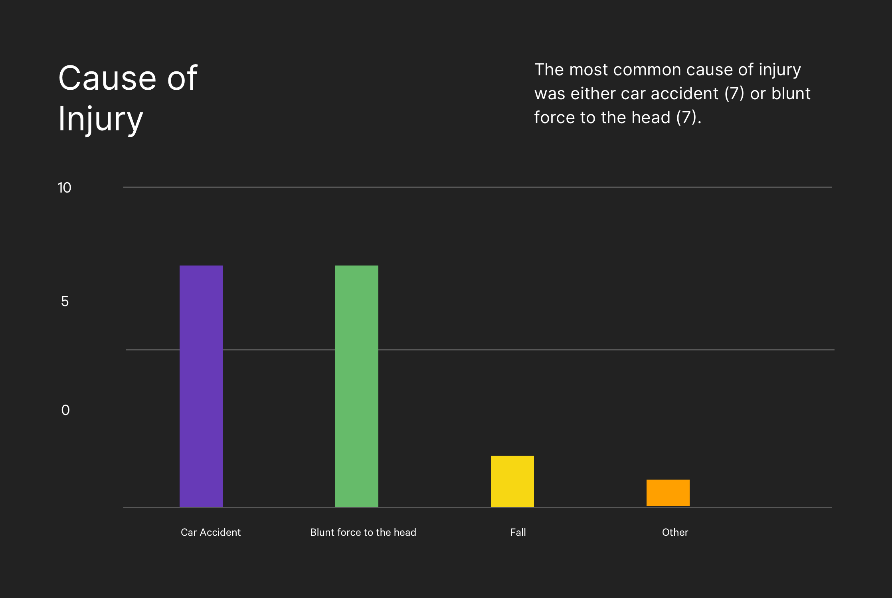
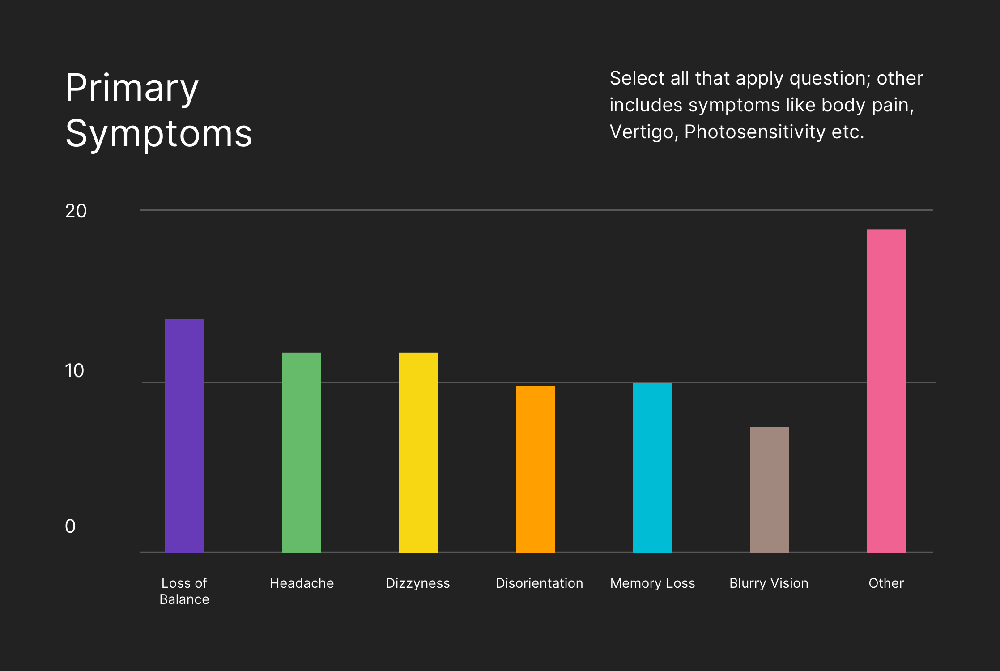
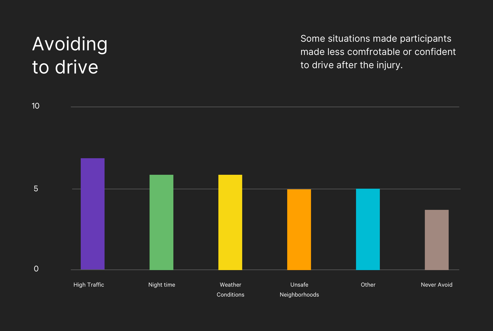
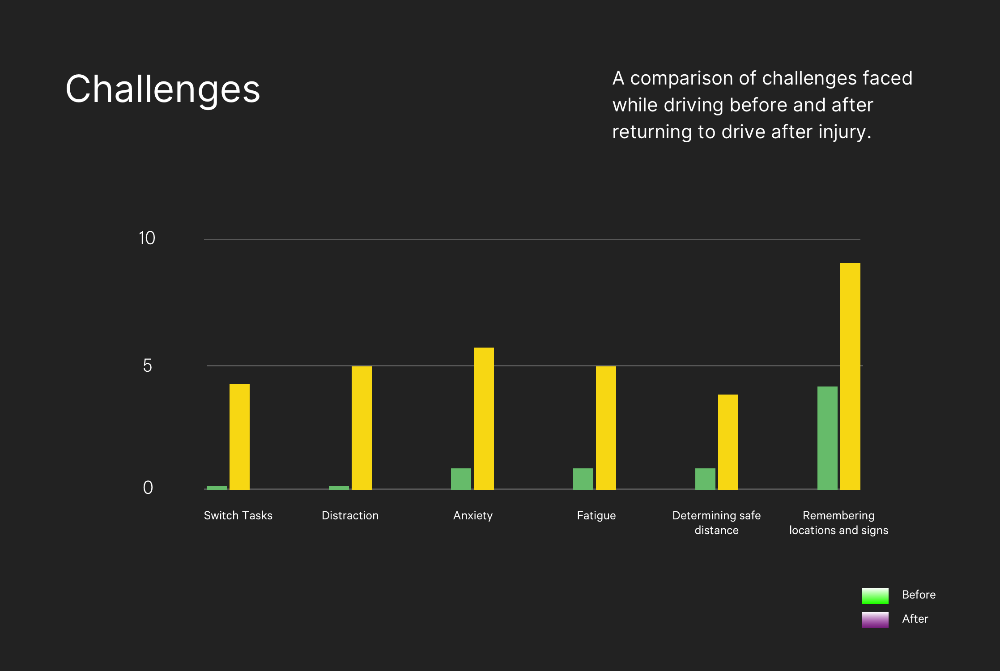
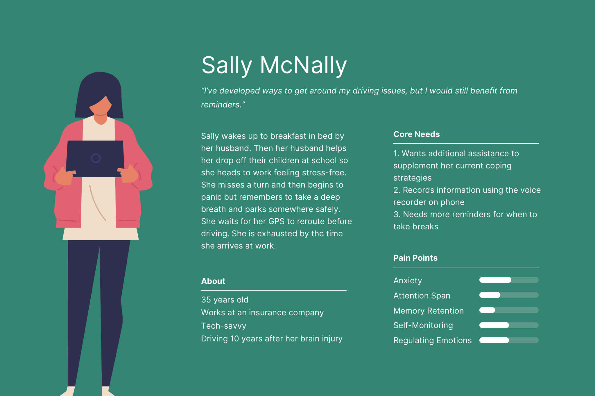

Traumawise
User-Centered Design, Fall 2018.
Introduction
As a part of my Master's degree at University of Washington, this project dives into the intricacies of a user-centred design process: hypothesising a design rationale, validating the hypothesis through user research, using user stories and scenarios to inform sketches and ideation, and getting user feedback for low/high fidelity prototypes.
1. Problem
The current state of car interfaces is increasingly digital - big bold touch screens that the user can interact with, voice commands, and seamless media transfer from phone to the car. Despite these advancements, there have been few that address the executive functioning of the user. Returning to driving after a brain injury can be intimidating, especially when every interaction is digital. For this project we wanted to find out what are the main issues faced by TBI patients while driving, what kind of cues would they be comfortable recieving, and how big of a role does a car interface can play in their driving experience, which narrows our initial design question to -
"How can we support brain injury survivors as they return to driving?"
2. User Research
Before begining with user research, it was essential to establish our stakeholders. Our primary stakeholders are traumatic brain injury (TBI) survivors who are returning to driving. Our secondary stakeholders were Occupational Therapists and Speech-Language Pathologists, and also a patient's friend, family member, or caregiver, who may accompany them at different stages of their tasks.

2.1 Surveys
We created a survey with 32 questions targeting individuals with TBIs who are currently driving. The survey included questions about a participant’s demographics, medical history, challenges with driving, driving habits, and their suggestions of what could improve their driving experience. There was a combination of short answer responses, long answer responses, and checkboxes, along with additional input for contact information so as to follow them up for interviews.
-

- 
- 
- 
- 
2.2 Interviews
The next step was following up with people who provided their contact information in the surveys for interviews. We were able to interview nine TBI Patients, understanding the intricacies of their injury and its repercussions, asking about their personal inventory when they drive, their pain points, and their initial impressions of our design approach. In addition, we also interviewed some of the professionals in the field like a Driving Rehabilitation Specialist, Occupational Therapist, and a Speech Language Pathologist to further gain insight into the details of a brain injury and its effect on cognitive processes.
Interview Notes2.3 Competitive Product Analysis
We looked up existing tools or programs that addressed driving safety for individuals with cognitive impairments.

2.4 Research Findings
- Anxiety - This is a recurring issue with TBI survivors, however, they are not necessarily anxious about their skills as a driver. Some cannot articulate their source of their anxiety - being in a car is enough of a cause. Many cited memory and distractions as causes and often, anxiety led to fatigue or frustration.
- Memory - While their ability to drive is unaffected, some experienced forgetfulness as related to driving specifically (e.g. forgetting to check their blind spot or for traffic before making a right turn at a stop light); others forget generic tasks (e.g. an intended destination or purpose for being there)
- Distractability - For TBI survivors, anything can become a distraction, inside or outside of the car, moving or stationary. As a result, their reasons for distractions are highly individualized.
- Independence - When asked why driving was important, “independence” was repeatedly a top hit. This not only confirmed the second part of our design rationale but also helped us understand the conflict TBI survivors are experiencing as they re-enter their lives.
2.5 Design Requirements
Based on our research findings, we found out what requirements should the design satisfy, thereby also redefining the original design question to:
"How can we support traumatic brain injury survivors by reducing their cognitive load as they return to driving?"
Address Executive Functions
- Attention
- Planning
- Organization
- Prioritization
Audio Visual Cues
- Navigation and Driving
- Task Completion
- Breaks between sessions
- Vital Checks
Therapy Plan Extension
- Tracking user activity
- Fading Cues
- Setting Goals
- Postitive Reinforcement
2.6 Personas
-

- 
-

3. Sketching and Ideation
To address the varying degrees of need from our users at the same time being wary of the fact that a possible solution for one user could be a major distractions for another, we structured most of our design features in the heart of the Settings view of the application. This would allow each user to customize everything - from the frequency and and type of reminders/cues, goals, and breaks - according to their needs.

The car infotainment system would work in tandem with the smartphone/wearable application - the smartphone application would keep a track of the sleeping habits, heart rate and based on that data it would seamlessly synchronize to the dashboard interface and alert the user if any of the above mentioned executive function levels are below the optimal. We tried to reduce the cognitive load as the driver has to interact with a singular interface in a particular context, thereby reducing the need to interact with other mobile/wearable interfaces.
4. Protyping
4.1 Paper Prototype
After having some initial ideas about what goes in the application, we deicided to bring that to life by making a paper prototype, coupled with a scenario. The scenario was predominantly fixed to give ocntext to non-TBI participants and also to get an initial hint of whether the users are able to perform atleast one single task that they know beforehand. The scenario was as follows:
Scenario


4.2 Usability Test Results
With the constraint of time along with having such a niche target audience of traumatic brain injury patients, the usability testing had a sample size of only 5 participants. However, the feedback garnered from the testing was very insightful and helped us look at the project from a totally different perspective:
1. "How intrusive are the cues? Can I set that?"
Only two out of all the participants pointed out that there was no option to toggle the frequenct of visual/audio cues inside the application settings, which was a big feedback as the application was meant to customize every user settings according to their needs.
2. "Do I have to enter each and every goal?"
Every participant pointed out that typing each and every goal recommended by their therapist was taxing and suggested whether there was an option to ease that.
3. "There is a lot going on in the settings. So much text!"
While the settings did put the user in command for most of the tasks, the text along with the description for those settings overwhlemed the users at times. Two users also reported the secondary text being too small.
4. "Should I press the green light to begin driving?"
The primary action button in the dashboard threw many people offguard, who were unable to decide whether to press the 'Green light' button looking signifier or the label 'Drive Now'
5. "Does the pre-driving checklist appear everytime before driving?"
While the intent was to make the user aware of their inventory before driving, it became frustrating for them to view it every time before clicking on the 'Drive Now' button. Therefore, on of them suggested to allow to ability to toggle it, as well as decide for themselves what goes on that list rather than us making an exhaustive list.
4.3 Hi-fidelity Prototype
The primary aim of the hi-fidelity prototype was to address the user pain points from the paper prototype, along with allowing participants to interact with a more close to end-product experience. While the design was bare bones, it gave user the idea of what they are getting into and got us valuable feedback.

Key Findings
By giving the participants a scenario and a task list to work upon, we discovered some important insights from their usage and decided to assign severities to each of those findings for prioritization
- Severity 1: Two participants found ‘Positive reinforcements’ in the middle of a driving session to be distracting and suggested they appear post completion of the session along with more stress on safety and navigation.
- Severity 2: All participants appreciated the ability to customize every setting in the setup screens but they also found the font on the setup screens to be small for proper readability.
- One of the participants was confused whether to wait for the in-driving visual cue to disappear or to dismiss them manually.
- Two out of the three participants suggested app wide ‘Dark Mode’ for better readability but that did not prevent them from using the app.